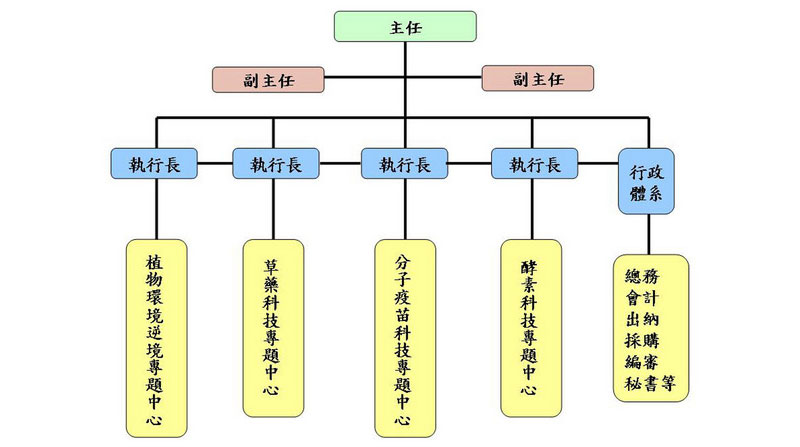

農生中心之主要任務為從事任務導向的基礎研究，以助於解決臺灣農業問題及推動臺灣農業生物科技產業 的發展。鑑於農業生物研究領域的廣闊及迅速發展，農生中心建立重點性的整合研究計畫，並不斷追求創新， 以促進台灣發展具獨特性及具世界競爭力的農業生技研究及產業為目標。農生中心共成立「植物環境逆境」、 「草藥科技」、「分子疫苗科技」及「酵素科技」等四個研究專題中心，並持續擴充並增聘及合聘研究員及研 究技師，一起參與研究工作，使農生中心組織更健全化，並與中研院各相關研究所和中心及國內各大學進行技 術合作，共同推動大型跨領域研究計畫。 農生中心內部已建構數個技術平台，包括次世代定序、基因體、蛋白質體、代謝產物體、動植物組織培養、 實驗動物等，並充份利用數項核心設施： 一、代謝產物體學核心設施 (Metabolomics Core Facility)； 二、植物技術 核心實驗室 (Plant Technology Core Facility)； 三、實驗動物核心設施 (Laboratory Animal Core Facility)； 四、蛋白質體核 心設施 (Protein Core Facility)，來積極從事尖端、創新之基礎農業生物科技相關研究，期能獲得具應用性、平台性 的智慧財產專利權，並發表有高水平之國際科學或技術學研究論文，以解決重要農業相關問題。本於這樣的前 瞻目標及學術專業規範下，農生中心期望提供台灣生技產業界有效的「互相聯繫 / 整合機制」及「溝通產、學、 研界所需之生物技術資訊圈」，扮演台灣農業生物技術產業及工業界之觸媒角色。
農生中心組織架構與四個研究專題中心
